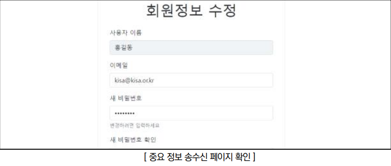
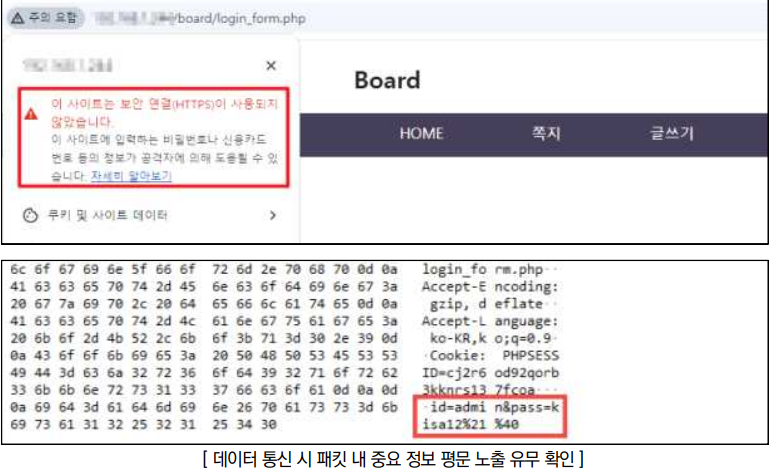
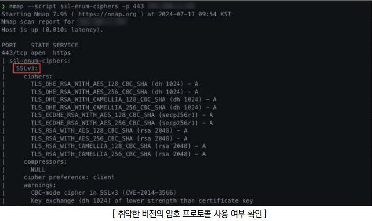

점검 목적
- 서버와 클라이언트 간 통신 시 데이터의 암호화 여부 점검
- 서버와 클라이언트 간 통신 시 데이터의 암호화 전송 미흡으로 정보 유출의 위험을 방지하고자 함
참고
※ Sniffing : 스니퍼(sniff: 냄새를 맡다, 코를 킁킁거리다)를 이용하여 네트워크 상의 데이터를 도청하는 행위
판단 기준
양호 : 중요 정보 전송구간에 암호화 통신이 적용된 경우
취약 : 중요 정보 전송구간에 암호화 통신이 이루어지지 않는 경우
조치 방법
- 사이트의 중요 정보 전송구간(로그인, 회원가입, 회원정보관리, 게시판 등)에 대하여 암호화 통신(https, 애플리케이션방식) 적용
점검 방법
Step 1) 중요 정보(인증정보, 개인정보, 로그인페이지 등)를 송수신하는 페이지 존재 여부 확인

Step 2) 중요 정보 송수신 페이지가 암호화 통신(https, 데이터 암호화 등)을 하는지 확인

Step 3) 취약한 버전의 암호 프로토콜 사용 시 암호화된 통신 내용이 유출될 가능성이 존재하므로 취약한 버전의 SSL(SSL 2.0, 3.0) 사용 여부를 점검

조치 방법
1. 웹상에서의 전송 정보를 제한하여 불필요한 비밀번호, 주민등록번호, 계좌정보와 같은 중요 정보의 전송을 최소화하여야 하며, 중요 정보에 대해서는 SSL 등의 암호화 통신을 사용하여 도청으로부터의 위험을 제거함
2. 쿠키와 같이 클라이언트 사이드에서 노출되는 곳에 비밀번호, 인증인식 값, 개인정보 등의 중요 정보 제거
3. 암호화 전송 시 프로토콜 설계의 결함이 있는 SSLv2, SSLv3은 비활성화 필수, TLSv1.2 이상 사용을 권장함